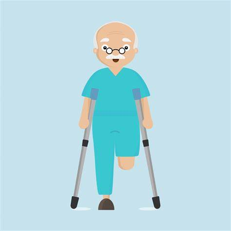

To what extent are disabled adults empowered to determine their own needs and choose their own support services?
Firstly this assignment looks at defining disability and the introduction of empowerment within the disabled community. It will consider the situation as it is now and where the future lies for disabled adults.
There are many ways to define let us see some cases in disabilities and identify some solutions for them using new Technologies
Ways to Empower a Person with a Disability
HERE, We go in detail
BLIND
One key message relayed is making sure we treat every blind person as worthwhile,
no matter what their blindness skill set. In the blindness community,
some who have been blind for a long time may expect newly blind people just to "get over it," meaning the urge to stay home and to depend on others to assist them. We need to reassure them that it is OK for them to try new things and not expect to learn everything immediately.
Disability of person with no arms and legs
There are many common problems faced by those with a physical disability. These challenges can include everything from maneuvering around a home with limited mobility to finding accessible transportation. Fortunately, there are many solutions available that can help to make life easier. The economic empowerment of persons with disabilities can be achieved if they have access to jobs and livelihoods and basic entitlements, such as education, health services, and housing.CLICK HERE... for more details
Deaf and Dumb
It is important that people feel able to express themselves and attain fluent, two way communication amongst the hearing as well as the non-hearing.Our customs and traditions have been passed down to us with our values and beliefs about the “Deaf and Dumb” to constitute our culture of the hearing impaired.
CLICK HERE... for more details